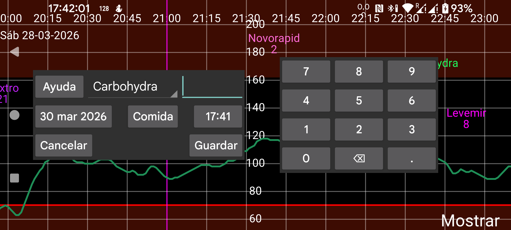

ar de es hi it ja nl pl ru tr uk uz zh en
En Cantidad puedes introducir números bajo cualquier etiqueta. Puedes definir las etiquetas en menú izquierdo → Ajustes → Etiquetas numéricas. Las cantidades introducidas con una etiqueta concreta se muestran en una altura fija del gráfico determinada por esa etiqueta.
Más adelante puedes modificar una cantidad introducida manteniéndola pulsada. También puedes seleccionarla en la lista de cantidades introducidas desde menú central izquierdo → Lista.
También es posible recibir por NFC los datos de dosis de insulina de NovoPen® 6 o NovoPen Echo® Plus escaneando la pluma NFC. Después del escaneo puedes cambiar bajo qué etiqueta se guardan las dosis en Juggluco y limitar la importación a las dosis posteriores a una fecha y hora determinadas. Si la memoria de la pluma contiene cientos de dosis, puede tardar más de 30 segundos en recibirlas todas por NFC.
Algunos glucómetros también pueden enviar a Juggluco por Bluetooth mediciones capilares de glucosa. Consulta menú izquierdo → Ajustes → Intercambiar datos → Glucómetros.
En menú izquierdo → Ajustes → Etiquetas numéricas también se indica bajo qué etiqueta introduces los carbohidratos de una comida. Para esa etiqueta aparece un botón Comida en Cantidad. Al tocarlo vas a una pantalla donde puedes componer una comida a partir de sus componentes. El contenido de carbohidratos se calcula automáticamente, o puedes introducirlo y entonces se calcula la cantidad necesaria de uno de los ingredientes.
Excluir: excluye una medición capilar de glucosa de las calibraciones porque el nivel de glucosa está subiendo o bajando, o porque el sensor aún está en calentamiento.